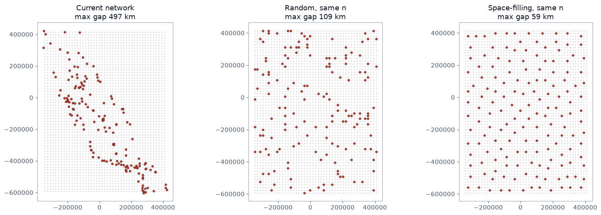
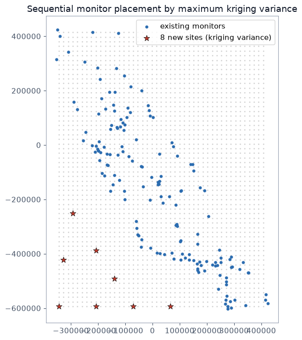
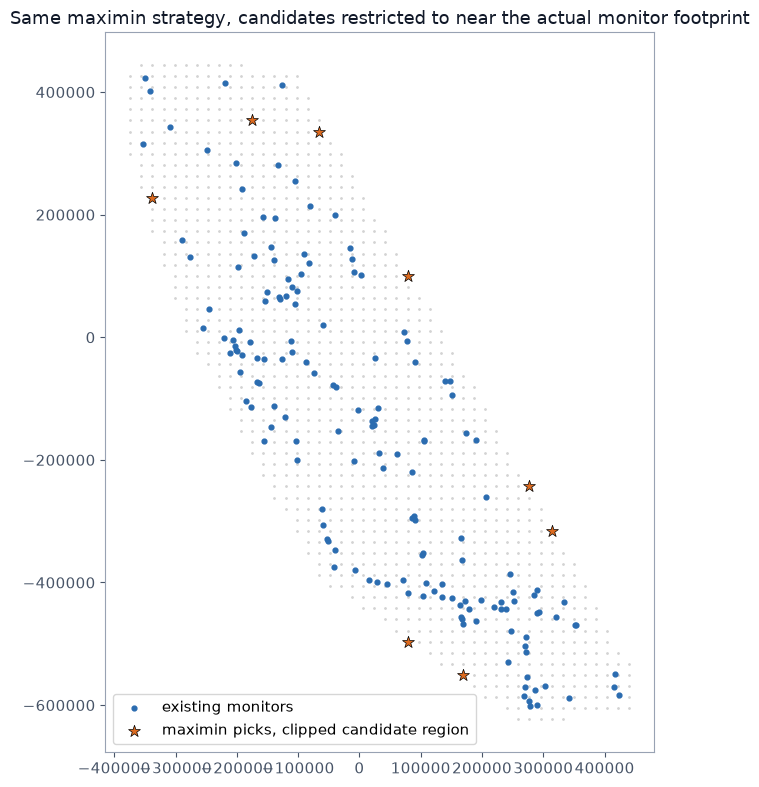

Where the current network has gaps; coverage_metrics for design comparison; sequential placement by kriging variance. This notebook is Part 8. Spatial Sampling and Design (Chapter 8.4 of 5). The worked example uses CA_pm25_2025.csv (Part 7’s 159-site California PM2.5 monitor network). The methods come from geolattice.spatial_statistics.sampling, geolattice.spatial_statistics.interpolate.
Overview
Part 7 built kriging models and cross-validated interpolators on California’s 159-monitor PM2.5 network without ever asking whether that network is any good as a design. This chapter asks exactly that: quantifying the current network’s coverage, comparing it against what a purpose-built design would achieve at the same size, and then addressing the more practical question: given the network as it exists today, where should the next few monitors go?
Step
What we do
Audit
coverage_metrics on the real 159-site network: mean/max distance to nearest monitor, minimum spacing, balance
Compare
The same metrics for a random and a space_filling network of the same size
Sequential placement
Add monitors one at a time, each one where the current kriging model is least certain
An alternative
The same idea using pure geometry (maximin distance) instead of a fitted variogram
Locate the repository root, import the spatial-statistics helpers, and point DATA at the example files.
Installation. This notebook needs installation option 3 (core, spatial analysis and spatial statistics): pip install "geolattice[statistics]". See “Installation options” in the GeoLattice README.
geolattice.spatial_statistics : version 0.3.49
current network: 159 monitors
How Good Is the Current Network, Really?
coverage_metrics needs a reference “frame”: a candidate universe of locations the network should be evaluated against: separate from the monitors themselves. A fine grid over the monitor network’s own bounding extent serves that purpose here: it lets us ask “if PM2.5 could be measured anywhere in this region, how far is the nearest monitor, on average and at worst?”
Code
reference_grid = make_grid(monitor_coords, n_cells=60).coordscombined = np.vstack([reference_grid, monitor_coords])n_ref =len(reference_grid)current_idx = np.arange(n_ref, n_ref +len(monitor_coords))current_sample = SpatialSample("current", current_idx, np.ones(len(monitor_coords)), combined)current_metrics = coverage_metrics(current_sample)for k, v in current_metrics.items(): unit =" m"if"dist"in k or"spacing"in k else""print(f"{k:22s}: {v:,.1f}{unit}")
balance : 3.2
mean_dist_to_sample : 103,848.9 m
max_dist_to_sample : 496,776.3 m
min_spacing : 1,110.5 m
The minimum spacing of about a kilometre confirms what Part 7 already suspected from the leave-one-out optimism finding (Chapter 7.5): several monitors sit almost on top of each other. The maximum distance to nearest monitor, in contrast, runs into the hundreds of kilometres: somewhere in this region, the nearest working monitor is nearly the width of the state away.
Space-Filling as an Alternative
What would the same number of monitors look like if placed for coverage rather than accumulated opportunistically over years of independent siting decisions?
fig, axes = plt.subplots(1, 3, figsize=(16, 5.5))for ax, s, title inzip(axes, [current_sample, random_sample, sf_sample], [f"Current network\nmax gap {current_metrics['max_dist_to_sample']/1000:.0f} km",f"Random, same n\nmax gap {coverage_metrics(random_sample)['max_dist_to_sample']/1000:.0f} km",f"Space-filling, same n\nmax gap {coverage_metrics(sf_sample)['max_dist_to_sample']/1000:.0f} km"]): ax.scatter(reference_grid[:, 0], reference_grid[:, 1], s=1, color="lightgrey") ax.scatter(s.coords[:, 0], s.coords[:, 1], s=15, color=COLORS["red"], edgecolor="k", linewidth=0.3) ax.set_title(title) ax.set_aspect("equal")plt.tight_layout()plt.savefig("network_coverage_comparison.png", dpi=100, bbox_inches="tight")plt.show()

The gap is dramatic. At the same site count, a space-filling design cuts the mean distance to the nearest monitor by more than half and the worst-case gap by a similar margin, while its minimum spacing is far larger, no near-duplicate stations at all. This is not a criticism of how the real network was sited (individual monitors are placed for specific regulatory, population-exposure, or historical reasons that a pure coverage metric cannot see), but it does make the trade-off explicit: the current network was clearly not optimized for uniform spatial coverage, and a coverage-optimized network of the same size would look very different.
Sequential Selection by Kriging Variance
Rather than redesigning the whole network, a more realistic question: given the network exactly as it stands today, where should the very next monitor go? Chapter 7.4’s kriging standard deviation is a natural answer, place the next monitor exactly where the current model is least certain. This is a loop, not a package function: OrdinaryKriging.predict(..., return_std=True), find the candidate with the largest predicted standard deviation, add it, refit, repeat.
Code
def sequential_kriging_selection(coords, values, candidates, n_new): cur_coords = coords.copy() cur_values = values.copy() chosen = []for step inrange(n_new): model = OrdinaryKriging(variogram="auto") model.fit(cur_coords, cur_values) _, std = model.predict(candidates, return_std=True) best_idx = np.argmax(std) chosen.append((candidates[best_idx].copy(), std[best_idx]))# kriging variance depends only on geometry, not observed values, so an arbitrary# placeholder value lets subsequent iterations' geometry-only calculation proceed cur_coords = np.vstack([cur_coords, candidates[best_idx]]) cur_values = np.append(cur_values, cur_values.mean())return chosennew_sites_kriging = sequential_kriging_selection(monitor_coords, monitor_values, reference_grid, n_new=8)for i, (loc, std) inenumerate(new_sites_kriging):print(f"new site {i+1}: ({loc[0]:,.0f}, {loc[1]:,.0f}) predicted std at selection = {std:.3f}")
new site 1: (-344,272, -593,678) predicted std at selection = 2.857
new site 2: (-207,556, -593,678) predicted std at selection = 2.846
new site 3: (-70,839, -593,678) predicted std at selection = 2.835
new site 4: (65,877, -593,678) predicted std at selection = 2.824
new site 5: (-327,183, -422,782) predicted std at selection = 2.814
new site 6: (-293,004, -251,887) predicted std at selection = 2.800
new site 7: (-139,198, -491,141) predicted std at selection = 2.788
new site 8: (-207,556, -388,603) predicted std at selection = 2.776
Each successive site’s predicted standard deviation at the moment of selection decreases slightly: the model becoming progressively more confident everywhere as new monitors fill in the worst remaining gaps. Kriging variance depends only on the sampling geometry and the fitted variogram (Chapter 7.4, Section 5), never on the observed values themselves: which is exactly what makes this loop well-defined without needing to know what the new monitors would actually measure in advance.
Code
fig, ax = plt.subplots(figsize=(7, 7))ax.scatter(reference_grid[:, 0], reference_grid[:, 1], s=1, color="lightgrey")ax.scatter(monitor_coords[:, 0], monitor_coords[:, 1], s=12, color=COLORS["blue"], label="existing monitors")new_coords_krig = np.array([loc for loc, _ in new_sites_kriging])ax.scatter(new_coords_krig[:, 0], new_coords_krig[:, 1], s=80, color=COLORS["red"], marker="*", edgecolor="k", linewidth=0.5, label="8 new sites (kriging variance)", zorder=5)ax.set_title("Sequential monitor placement by maximum kriging variance")ax.legend()ax.set_aspect("equal")plt.tight_layout()plt.savefig("sequential_kriging_placement.png", dpi=100, bbox_inches="tight")plt.show()

Sequential Selection by Maximin Distance
A simpler, model-free alternative: place each new site to maximize its minimum distance to every existing and already-chosen site: pure geometric coverage, with no variogram fit required at all.
Code
def sequential_maximin_selection(coords, candidates, n_new): cur_coords = coords.copy() chosen = []for step inrange(n_new): tree = cKDTree(cur_coords) dist, _ = tree.query(candidates) best_idx = np.argmax(dist) chosen.append((candidates[best_idx].copy(), dist[best_idx])) cur_coords = np.vstack([cur_coords, candidates[best_idx]])return chosennew_sites_maximin = sequential_maximin_selection(monitor_coords, reference_grid, n_new=8)for i, (loc, d) inenumerate(new_sites_maximin):print(f"new site {i+1}: ({loc[0]:,.0f}, {loc[1]:,.0f}) distance to nearest existing site = {d/1000:.1f} km")new_coords_maximin = np.array([loc for loc, _ in new_sites_maximin])agreement = np.array([np.min(np.linalg.norm(new_coords_maximin - c, axis=1)) <5000for c in new_coords_krig])print(f"\nkriging-variance and maximin picks agree (within 5 km) on {agreement.sum()} of 8 sites")x_lo, x_hi = reference_grid[:, 0].min(), reference_grid[:, 0].max()y_lo, y_hi = reference_grid[:, 1].min(), reference_grid[:, 1].max()tol =0.02*max(x_hi - x_lo, y_hi - y_lo)def on_boundary(pts): on_x = (np.abs(pts[:, 0] - x_lo) < tol) | (np.abs(pts[:, 0] - x_hi) < tol) on_y = (np.abs(pts[:, 1] - y_lo) < tol) | (np.abs(pts[:, 1] - y_hi) < tol)return on_x | on_yprint(f"kriging picks on the candidate grid's outer edge: {on_boundary(new_coords_krig).sum()} of 8")print(f"maximin picks on the candidate grid's outer edge: {on_boundary(new_coords_maximin).sum()} of 8")
new site 1: (407,668, 414,606) distance to nearest existing site = 496.8 km
new site 2: (-344,272, -593,678) distance to nearest existing site = 373.0 km
new site 3: (407,668, 106,994) distance to nearest existing site = 307.6 km
new site 4: (134,235, 397,516) distance to nearest existing site = 260.5 km
new site 5: (-344,272, -337,335) distance to nearest existing site = 253.1 km
new site 6: (-105,018, -593,678) distance to nearest existing site = 227.3 km
new site 7: (407,668, -115,170) distance to nearest existing site = 222.2 km
new site 8: (202,593, 192,441) distance to nearest existing site = 216.2 km
kriging-variance and maximin picks agree (within 5 km) on 1 of 8 sites
kriging picks on the candidate grid's outer edge: 5 of 8
maximin picks on the candidate grid's outer edge: 7 of 8
Both sets of picks sit almost entirely on the candidate grid’s own outer edge: and the two strategies agree on only 1 of 8 sites, not “closely” as a first look at the summary numbers alone might suggest. This is a real, important problem with the setup, not a subtle difference between the two criteria: make_grid’s candidate region (Chapter 7.2) is the monitor network’s rectangular bounding box, which extends well beyond California’s actual coastline and land border: its corners sit in the Pacific Ocean, Nevada, Arizona, Oregon, and Mexico, none of which are legitimate PM2.5 monitor sites. Both maximum-kriging-variance and maximin-distance are, correctly, finding the points in the candidate set that are farthest from any existing monitor: but because the candidate set itself was never restricted to real, feasible California territory, “farthest from any monitor” collapses onto whichever edge of the rectangle happens to be emptiest, and minor differences between the two criteria (kriging variance flattens out, nearly tied, once well beyond the $$133 km variogram range, while maximin distance keeps growing strictly with distance) are enough to send them to different far corners of a region that was never meaningfully California in the first place.
The map makes Section 6’s finding vivid: nearly every star and circle sits right at the outer boundary of the plotted region, not scattered through California’s genuine coverage gaps in the interior. The practical lesson is more important than either algorithm’s output: any sequential-selection loop built on make_grid’s rectangular bounding box will happily recommend a monitor in the ocean if that is where the candidate set says the largest gap is. Before running either strategy for a real siting decision, the candidate grid must be clipped to the actual feasible region: California’s land boundary, minus water bodies, parks, or other unsuitable land: using a real polygon (as make_grid itself supports directly: Chapter 7.2 passed it a point array for its bounding box, but it accepts a shapely polygon or GeoDataFrame just as easily, restricting candidates to only the cells whose centre actually falls inside). Only once the candidate set is genuinely restricted to plausible sites does “where is coverage worst” become a meaningful question to ask at all.
Code
from geolattice.spatial_statistics.interpolate import make_grid as make_grid_clippedimport geopandas as gpdfrom shapely.geometry import MultiPointcalifornia_hull = MultiPoint([tuple(c) for c in monitor_coords]).convex_hull.buffer(30_000)clipped_grid = make_grid_clipped(gpd.GeoDataFrame(geometry=[california_hull], crs="EPSG:3310"), n_cells=60)print(f"unclipped candidate grid: {len(reference_grid)} cells")print(f"clipped to (a buffered hull around) the actual monitor network's footprint: {clipped_grid.inside.sum()} cells")new_sites_clipped = sequential_maximin_selection(monitor_coords, clipped_grid.coords, n_new=8)new_coords_clipped = np.array([loc for loc, _ in new_sites_clipped])print(f"clipped-grid picks on the ORIGINAL unclipped grid's outer edge: {on_boundary(new_coords_clipped).sum()} of 8")fig, ax = plt.subplots(figsize=(8, 8))ax.scatter(clipped_grid.coords[:, 0], clipped_grid.coords[:, 1], s=1, color="lightgrey")ax.scatter(monitor_coords[:, 0], monitor_coords[:, 1], s=12, color=COLORS["blue"], label="existing monitors")ax.scatter(new_coords_clipped[:, 0], new_coords_clipped[:, 1], s=80, color=COLORS["orange"], marker="*", edgecolor="k", linewidth=0.5, label="maximin picks, clipped candidate region", zorder=5)ax.set_title("Same maximin strategy, candidates restricted to near the actual monitor footprint")ax.legend()ax.set_aspect("equal")plt.tight_layout()plt.savefig("clipped_candidate_placement.png", dpi=100, bbox_inches="tight")plt.show()
unclipped candidate grid: 2700 cells
clipped to (a buffered hull around) the actual monitor network's footprint: 1239 cells
clipped-grid picks on the ORIGINAL unclipped grid's outer edge: 1 of 8

With the candidate set restricted to a buffered hull around the real monitor footprint: a rough stand-in here for a true California land-boundary polygon, which this repository does not ship: the new picks move into genuine interior gaps between existing monitors, not off into a rectangular corner. This is the version of the exercise worth trusting for an actual siting decision; Section 6’s unclipped result is a cautionary example, not a recommendation.
Summary and Conclusions
This chapter applied this Part’s sampling-design tools to a genuinely unsolved, practical problem: evaluating and improving a real, imperfect monitoring network.
What we did
Measured the real 159-site PM2.5 network’s coverage directly: kilometre-scale minimum spacing (near-duplicate sites) alongside hundreds-of-kilometres worst-case gaps.
Found a space-filling design of the same size would cut both the mean and maximum distance to the nearest monitor by more than half, while eliminating near-duplicate spacing entirely.
Built a sequential kriging-variance placement loop, confirming predicted standard deviation decreases with each added site as the model becomes more confident everywhere.
Built a simpler maximin-distance alternative requiring no variogram fit at all.
Found the two strategies agree on only 1 of 8 picks, and both cluster almost entirely on the candidate grid’s outer rectangular edge: traced directly to make_grid’s bounding-box candidate set extending well into the Pacific Ocean, Nevada, Arizona, Oregon, and Mexico, none of them legitimate monitor sites.
Fixed it: restricting the candidate set to a polygon around the real monitor footprint moved the recommended sites into genuine interior coverage gaps: the version of this exercise actually worth trusting.
Practical takeaways
Audit any existing monitoring network’s coverage with coverage_metrics before assuming it is well-suited to the interpolation task at hand: Part 7’s whole cross-validation story (LOO’s optimism, Chapter 7.5) traces directly back to exactly the clustering this chapter quantifies.
Always clip a sequential-selection candidate grid to the actual feasible region before running the loop, a rectangular bounding box will confidently recommend monitors in the ocean or a neighbouring state, and neither kriging variance nor maximin distance has any way to know that on its own.
When redesigning a network from scratch is not an option, sequential kriging-variance selection (on a properly clipped candidate set) gives a principled way to prioritize the next few additions using the existing network’s own fitted model.
Next steps
Chapter 8.5 (Exercises) closes out this Part with five hands-on tasks spanning every design and estimator introduced across Chapters 8.1-8.4.
Further reading
Textbooks
Reference
Notes
Le, N. D. & Zidek, J. V. (2006). Statistical Analysis of Environmental Space-Time Processes. Springer.
Network design for environmental monitoring, including variance-based sequential selection
Key papers
Paper
Contribution
Royle, J. A. & Nychka, D. (1998). An algorithm for the construction of spatial coverage designs with implementation in SPLUS. Computers & Geosciences, 24, 479-488.
The maximin/coverage-design algorithm behind Section 6